Updated 2026-10-02. Open 使用教程 · PDF in the bot editor. The Chinese guide includes a downloadable PDF and print option. See the adapter guide and documentation index. Screenshots illustrate entries, not current saved grants.
admins_id and click Choose From Conversations. Search existing private users by nickname, check the intended account, confirm, then save the profile. Names and platforms are shown, with account IDs as secondary disambiguation; authorization still uses exact IDs, never nicknames. This replaces the former plain ID-list editor and preserves unmatched existing administrators. Enter Account Manually remains available. New users should privately message the bot first; groups and group creators are not administrator candidates. Non-admin private commands, including sid and help, return only 无权限; ordinary chat is unchanged. This grants AstrBot administrator privileges, not only one group's privileges. Privately verify with 我的权限.群列表, 选择群 1, 成员列表. Use 成员搜索 NAME if needed. Numbers refer to fresh directory snapshots and expire after ten minutes.禁言 2 and 解禁 2 act on the verified selected member. Manual chat mutes default to thirty minutes; 禁言 2 3 specifies three minutes. Group administrators use a real target mention: 禁言 @Member 3 or 禁言@Member 3. Durations must be integer minutes from 1 to 1440. Mute/unmute needs no second confirmation: accepted requests return a concise acceptance result. Internal automated and maintenance mutes retain their one-minute default.踢出 2 creates a preview only under the deployed content rules. The original administrator must send a new private message 确认踢出 TOKEN. The token is single-use, expires after ten minutes, and cannot be confirmed in a group or automatically by the model.manual_kick_only enabled: AI and automatic rules cannot remove members. Progressive mode recalls violations and mutes for 5, 15, then 60 minutes, with later mutes capped at 60 minutes. It requires mute and recall grants, not a kick grant. Legacy mode still warns first and mutes on repetition. Historical, unknown-time, or older-than-five-minute messages are audit-only. Standalone links/numbers and obvious reports are not sufficient grounds for automatic punishment.规则, 能力, 违规计数, and 结果 OPERATION_ID in the selected private group context. Accepted does not mean verified; never blindly retry unknown operations.wsl_private_management tool. Deterministic commands remain the simplest administration path.No test sanctions or group messages are required to read this tutorial. Newly added groups still require explicit action grants. See the Chinese PDF for the full beginner walkthrough and troubleshooting table.
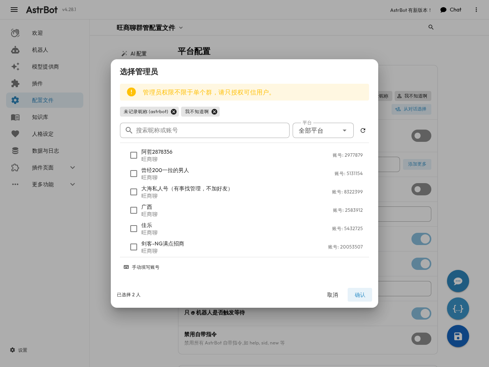
Send the exact command without /, the 群管 prefix, or a bot mention. For example,
群列表, 选择群 1, 成员列表, and 禁言 2 in administrator private chat.
Group member actions still require a transport-verified target mention; manual removal
retains private preview and confirmation. Operator authority comes from the effective
profile's administrator IDs, never nicknames or claimed roles. Legacy /群管 commands
remain compatible. Quoted commands, negations, and ordinary sentences are not executed.
Mentioning an administrator does not authorize the caller. Bot proactive-send targets
govern outbound destinations, not member administrator IDs. Group replies must be
enabled for public rankings and administrator commands; disabled replies are silent
and do not execute chat mutations.
Private-only group commands no longer send redirection messages. They are consumed without executing or invoking customer AI; this includes help aliases and content-mode admin group kicks. Public commands and private administration are unchanged.
Group members can send 排名 or 今日排名 in an enabled group with replies enabled.
Accepted group feature replies are recalled twenty seconds after each segment is
sent: rankings, command results, permission denials and
automatic violation warnings. Only the bot's own messages are recalled. User commands,
private replies, ordinary AI chat and proactive messages are unchanged. Pending jobs
survive restart and short reconnects; jobs more than five minutes overdue expire.
Uncertain recall attempts are recorded rather than retried.
The result contains a concise daily title, page number and twenty ranked members,
with native mentions of verified group identities. It does not mention the caller
or append a date, personal rank or counting explanation. Send 排名 2 for page two;
排行 and 今日排行 are aliases. Unknown mappings render names without fake mentions,
and empty pages show only 暂无记录. Private results use plain text. Counting uses Asia/Shanghai
calendar days and authenticated text the bot actually received. It does not claim
complete offline history. Count at most one message per person every thirty seconds;
the same normalized content does not count again within five minutes. Exclude bots,
commands, emoji-only messages, confirmed violations, and unknown message times.
Ties use the time the count was reached, then stable UID; query results cache for ten seconds.
Private ranking requires an administrator and a selected group. This is read-only:
rankings do not award prizes or announce daily results. Lotteries and invitation
rewards are separately opt-in private administrator activities.
In private chat, send 群列表, confirm the group name, then send 选择群 1. The index is
per-admin and expires after ten minutes; duplicate names include the group ID. Send each
command as a separate message; a multiline paste is not parsed as multiple commands.
Then configure:
抽奖奖励 18元猪脚饭
中奖人数 3
抽奖倒计时 10
参与上限 15
抽奖邀请门槛 0
领奖联系人 秦铭
开启抽奖
The group requires existing proactive-send authorization and replies. Countdown is in
minutes; capacity0 means unlimited; the invitation gate uses this group's credited
valid invitations. Members send 参加抽奖 once to enroll. At the deadline, current
membership and identities are revalidated and a cryptographically secure random sample
is persisted before publishing one native-mention winner list. Fifteen eligible entrants
and three winners produce20.00%. A full signup list does not end the timer early.
Admins can use 立即开奖, 取消抽奖, 中奖名单, 中奖名单 1 and 抽奖记录.
The private start acknowledgement summarizes the prize, winner slots and draw time. Signup
opens only after the group announcement is accepted.
Lottery announcements, cancellation notices, results, signup and status replies are kept,
not automatically recalled; persisted records remain queryable.
The designated contact distributes prizes manually; no cash payment is automated.
Invitation rewards use 设置邀请奖励 5, 开启邀请奖励, 邀请奖励状态,
邀请记录 and 暂停邀请奖励. Existing members become a nonpayable baseline.
New joined members require explicit native attribution, stable identities, good account
state and both sides still in the group. Pending invitations, bots, repeated joins and
unknown attribution are not credited. Checks run approximately every35 seconds;
unresolved new members expire after24 hours. Rates have at most two decimal places
and are points, not money transfers. Changes do not reprice old credits. Resuming
baselines current members again and does not backfill the paused interval.
Members query only their own account with 我的邀请 or 邀请奖励.
Credits are recorded by background verification; the bot does not send an unsolicited group
message for each credit. Admins can check scan health with 邀请奖励状态.
Disabled replies suppress direct commands without disabling separately granted moderation.
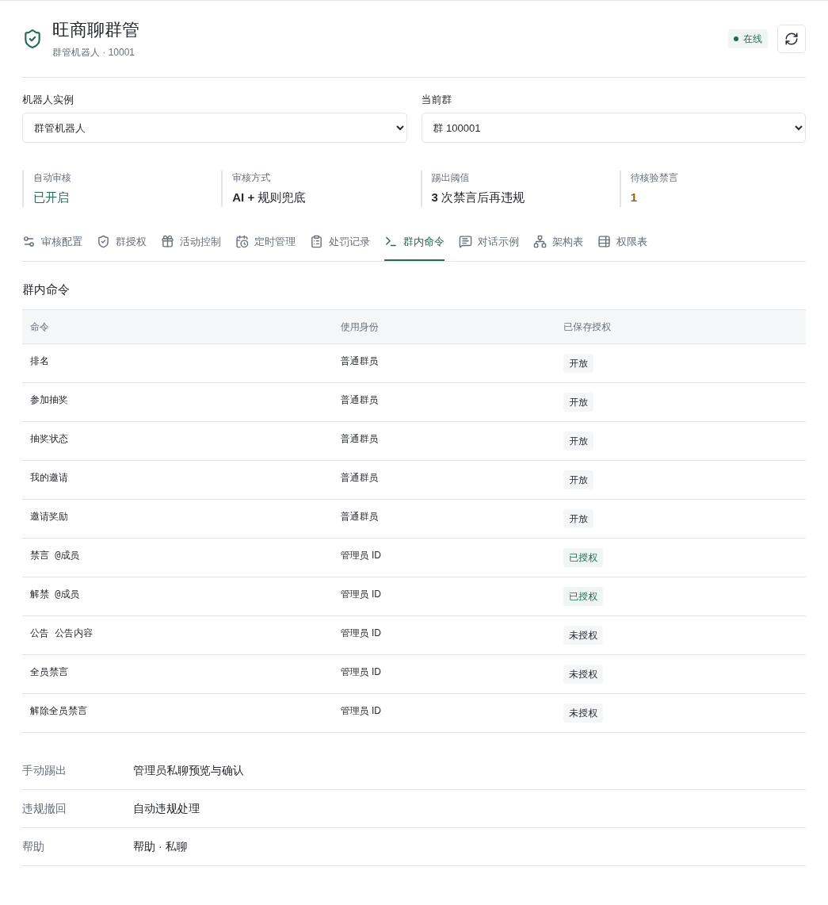
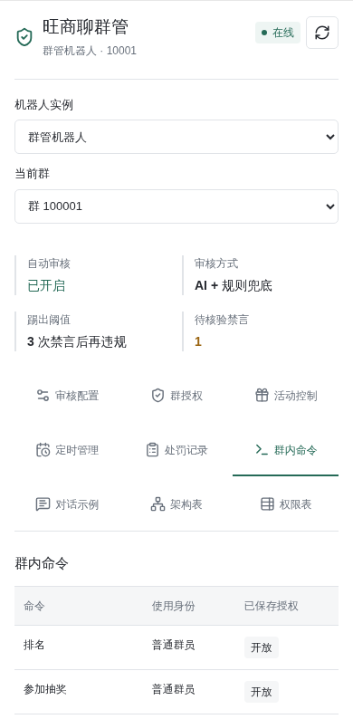
Open the installed plugin's page. Its nine views are moderation, group grants, activities, schedules, audit, commands, chat examples, architecture and permissions. Select a bot/enabled group; switching or refreshing warns about unsaved edits. Saves patch selected-group grants/customer model and edited instance settings, preserving other groups, login, proactive targets and counts. Global rules/admin models can affect several groups. Activities saves next-draw parameters and uniform points without starting a draw; schedules provides status/pause, not direct create/resume.
The existing Bots → Edit Wangshangliao → Moderation capabilities entry remains available. The additional entry is Plugins → Wangshangliao Moderation → Wangshangliao Management. Continue using the bot editor for platform login, bot creation/deletion, enabled groups, proactive sending and member batch jobs.
Audit displays current-cycle automatic mute counts, recent automatic sanctions, AI decisions and content-rule records. Accepted is not verified; unknown operations must not be retried. Lists are bounded recent records, not complete history exports. The page has no direct sanction or retry controls. Stale saves require a refresh. Access requires Dashboard sign-in and bot authorization; plugin-only API scope does not grant bot configuration access.
Architecture lists responsibilities, boundaries and implementation files for fourteen modules, including native transport, authorization, commands, AI review, rankings, activities, schedules, batch maintenance and persistence. Permissions covers every fixed command across member/admin and group/private contexts, showing the selected group's saved action grants. An allowed entry still needs enabled groups, replies and upstream permissions; unsaved edits do not alter these badges. Proactive lottery-publication grants must be verified in the bot editor. Members can use rankings, lottery status/enrollment and their own invitation points in groups. Non-admin private commands, including help and sid, are denied. Activity administration and schedule creation/resumption require admin private chat. Dashboard users may save activity parameters or pause schedules under separate panel authorization. Upstream group owners/admins do not automatically become AstrBot administrators. Both new views are read-only references, not sanction or chat-grant interfaces; existing configuration entry points remain unchanged.
Chat examples is a static chat-style preview of admin private-chat setup and the group lottery/invitation success flow. Names, prizes, counts and points are sample data. The preview does not send messages or save settings. Real parameters can be saved on the activity page or through admin private chat; starting, drawing, cancellation and invitation activation use admin chat.
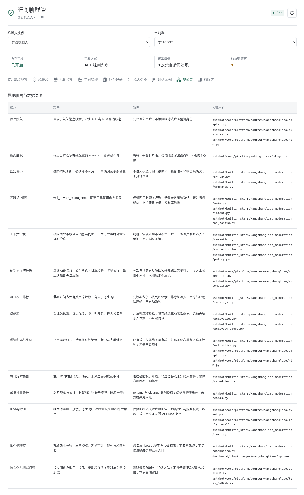
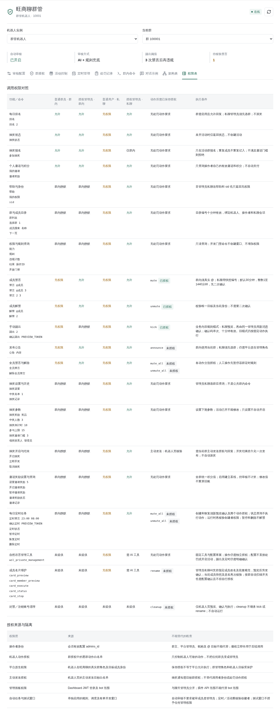
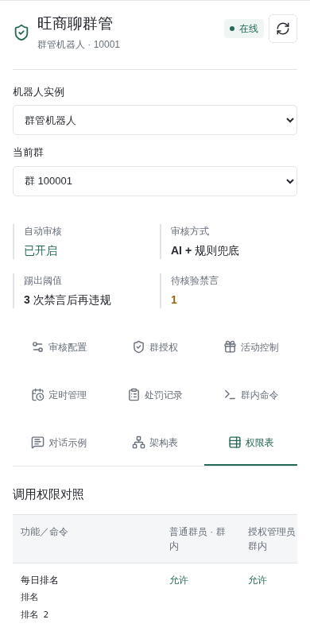
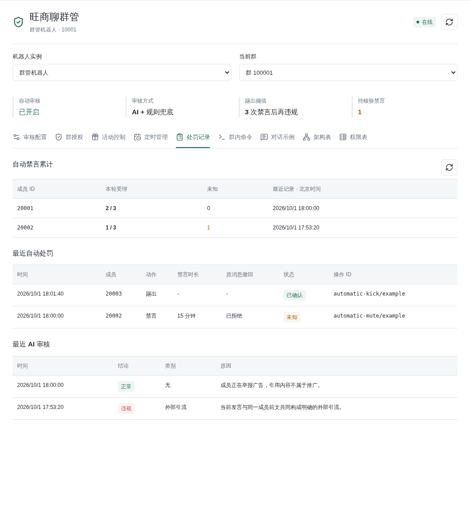
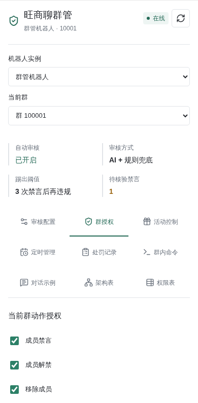
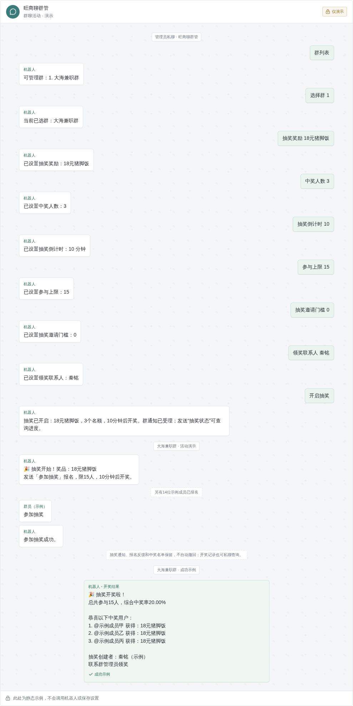
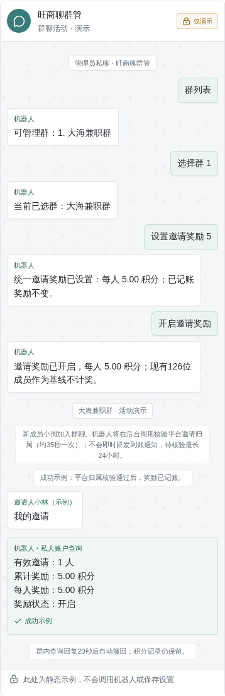
Enable automatic moderation and contextual AI auditing in the bot capability editor, select a configured chat provider and save. The real provider reviews only the current message and up to twenty preceding messages from the same group within ten minutes. It uses a separate, tool-free policy rather than the chat persona. Group text is untrusted data. Enabling auditing sends these texts to the selected model service.
An explicit allow or ambiguous/review decision does not trigger punishment or a keyword override. Model errors, timeouts or invalid evidence fall back to the existing high-confidence text rules. The model never chooses arbitrary identities, permissions or punishment actions.
The current receiving bot prohibits AI and automatic removal through manual_kick_only; AI cannot change this protected setting or re-enable automatic removal. Progressive mutes are 5, 15 and 60 minutes, with subsequent mutes capped at 60 minutes. The switch is instance-wide, while action grants remain per-group. Accepted mutes are counted durably per account, group and member. Duplicate, rejected, failed and unknown attempts do not count; human mutes and older historical operations are not backfilled. Unknown operations pause further automatic sanctions for that member and are never blindly retried. Recall and mute results are recorded separately.
The fourth-violation removal branch is retained only for other instances without this restriction and with explicit per-group opt-in plus mute/recall/kick grants. It is not the current receiving bot's configuration. Replaying a message, restarting or mute expiry cannot trigger removal. Only verified automatic removal closes that counting cycle.
Manual kicks retain the private confirmation procedure. Unmuting remains an administrator command or private AI tool operation; ordinary apologies do not clear sanctions or override a human administrator. Protected roles and managed bots remain exempt.
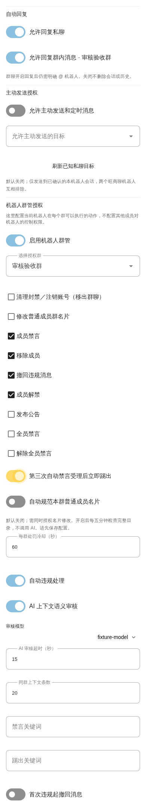
The screenshot illustrates the settings location, not the current saved values. Legacy removal options shown there must not be treated as enabled.
New schedules are not enabled by default; inspect current state first. Grant both mute_all and unmute_all. In admin private chat send 定时禁言 23:00 08:00, review target/next action, then a new 确认定时 TOKEN message. One daily Asia/Shanghai interval supports midnight crossing. Tokens are single-use, ten-minute, account/admin/private-session/version bound. Equal/invalid times are rejected. Natural language may propose times: 确认设置 TOKEN only creates a schedule preview; separate 确认定时 NEW_TOKEN is still required.
Group mentions, including administrator mentions, use customer service and the group's existing
persona/knowledge base. Choose a per-group customer_provider_id, or leave blank for the group
session model. Ordinary private consultation uses its private-session model/profile; fixed private
commands such as 我的权限 and 我的邀请 return 无权限 for non-admins.
Only authenticated admin private chat obtains wsl_private_management. Choose instance
admin_provider_id; the persona must permit that tool. Content auditing independently uses
moderation.semantic.provider_id, its own prompt/context and tools=None, without customer
persona or knowledge. Blank choices fall back to the corresponding session model.
Admin natural-language rules/activity settings first return target and before/after values.
Send a new 确认设置 TOKEN message in the same private chat within ten minutes.
This confirmation is model/tool-mediated, not a fixed syntax command; deterministic commands remain
the recovery option. Drafts cannot cross admins, accounts or private sessions; expired, repeated or
old-config-version confirmations fail. Saving parameters does not start activities or punish anyone.
Schedules additionally require the fixed confirmation described above.
Moderation fields other than the per-group auto-kick switch are instance-wide and can affect other enabled groups. Drafts cannot change identities, grants, credentials or arbitrary fields. The automatic escalation threshold is fixed at three accepted automatic mutes.
Activity bounds: winners1..100, duration1..10080 minutes, capacity0..10000 (0 unlimited),
invitation gate0..10000 and reward0..999999.99 points with at most two decimals.
Winners cannot exceed finite capacity. Gate3 means three credited invitations plus explicit
参加抽奖, not automatic enrollment. Only fifteen valid entrants and three winners give20.00%.
Read-only pending-application logs can identify inviter/applicant within account-visible coverage;
pending entries never count as joined members or rewards.
Use 定时状态 to inspect state, next action, latest result and errors. 暂停定时 pauses future actions; 删除定时 removes future plans but retains audit. Neither unmutes the group. 恢复定时 produces a fresh preview requiring confirmation. Saving or resuming starts at the next strictly future boundary, with no immediate state change.
Manual bot-wide group mute/unmute pauses the group's schedule. Before changing state directly in the platform client, pause the schedule: external administrators' intent cannot be reliably inferred. Submitted upstream requests cannot be cancelled. Offline bots, revoked creator authority, disabled groups, missing grants, account changes, missed boundaries and uncertain results pause schedules for review. Restarts do not replay missed transitions. accepted means accepted, not verified; unknown requests are never automatically retried. Plugin unload stops the worker and retains durable audit.